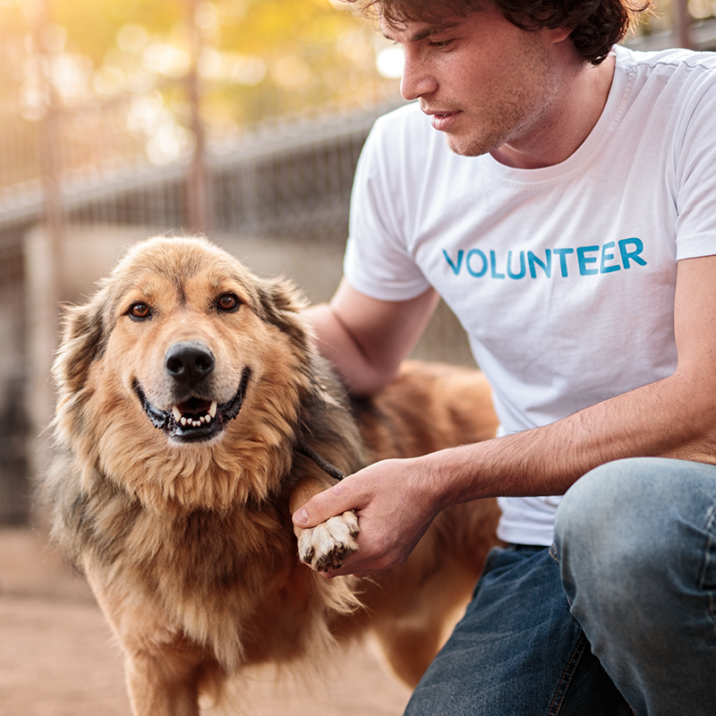

Adopt, Foster, and Volunteer
There is more than one way to change an animal's life. Choose the path that fits your home and your schedule.

Adoption Process
Our adoption fee covers vaccinations, a microchip, and spay or neuter surgery. Most adoptions are finished within one week.
- Browse adoptable pets or ask us for a match.
- Submit an adoption interest form on our contact page.
- Talk with an adoption counselor about your home and lifestyle.
- Meet the pet at our center or at their foster home.
- Sign the adoption agreement and bring your new family member home.
Foster Program
Foster families care for pets in their own homes while the animals recover from surgery, grow old enough for adoption, or learn to trust people again. Most placements last two to eight weeks.
- We provide food, supplies, and all veterinary care.
- A foster coordinator is available by phone seven days a week.
- You choose the type of animal and the length of the placement.

Volunteer Roles
Volunteers must be 16 or older and complete a two-hour orientation.
- Dog Walker
- Walk and exercise dogs at our center. Shifts are two hours, mornings or evenings.
- Cat Socializer
- Spend quiet time with shy cats so they are ready to meet adopters.
- Adoption Event Helper
- Greet visitors and handle animals at weekend adoption events around the Twin Cities.
- Transport Driver
- Drive animals to vet appointments and foster homes using your own vehicle.